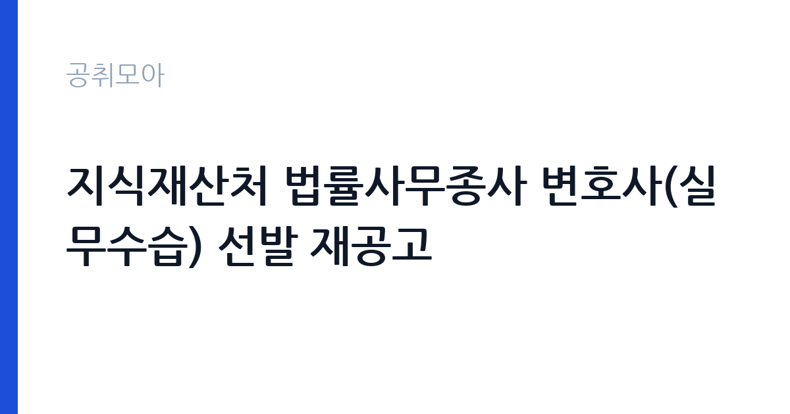

[국가기관] 지식재산처 법률사무종사 변호사(실무수습) 선발 재공고
지식재산처 · 대전 · 마감 2026-10-30 (D-4) · 출처 나라일터

한눈에 보는 모집 조건
| 기관 | 지식재산처 |
|---|---|
| 공고명 | 지식재산처 법률사무종사 변호사(실무수습) 선발 재공고 |
| 고용형태 | 정규직 |
| 근무지 | 대전 |
| 게시일 | 2026-10-26 |
| 마감일 | 2026-10-30 (D-4) |
지원자격, 이렇게 읽으세요
- 변호사(실무수습) 1명
- 접수 ~2026-10-30 마감
- 세부 조건은 원문 공고문 확인
정규직 채용은 기간의 정함이 없는 근로계약을 전제로 합니다. 수습 기간을 두고 평가한 뒤 정규직으로 확정하는 절차가 일반적이며 기관의 인사 규정과 임금 체계를 적용받습니다. 이번 공고는 지식재산처에서 직접 진행하는 자체 전형으로, 응시자격과 제출서류는 공고문에 항목별로 제시됩니다. 법무 직무는 변호사 자격이 필수입니다. 대한변호사협회 등록 여부와 개업 상태를 확인하며, 일부 공고는 특정 분야 경력 연수를 요구합니다. 일반임기제공무원으로 채용되면 임용 기간과 연봉등급이 정해지고, 계약직이면 근로계약 기간이 명시됩니다. 사내변호사 형태는 정규직 채용으로 수습 기간이 설정되기도 합니다. 겸직 제한과 이해충돌 방지 관련 규정을 확인해야 합니다. 서류는 접수 마감 이후 보완이 되지 않으므로 자격 요건과 증빙 서류를 마감 전에 모두 갖춰야 합니다. 공고문에 명시된 우대 사항은 해당 여부를 확인해 증빙을 첨부해야 가점이 반영됩니다. 자격증은 유효 기간과 등록 상태를 확인해야 합니다. 갱신이 필요한 자격이라면 갱신 여부를 먼저 점검하십시오.
이 공고의 포인트
이 공고의 첫 번째 포인트는 고용 형태입니다. 수습 기간 평가를 통과하면 기간의 정함이 없는 신분이 되어 고용이 안정됩니다. 두 번째는 업무 범위가 명확하다는 점입니다. 법무 직무로 채용되므로 배치 이후 담당 업무가 크게 흔들리지 않습니다. 세 번째는 근무지입니다. 대전 지역 근무로 수도권 공고에 비해 지원자 분포가 넓지 않아 상대적으로 경쟁이 분산되는 경우가 있습니다. 채용 규모가 크지 않아 면접 비중이 높은 전형이 될 가능성이 있습니다. 같은 직무 공고 중에서는 접수 마감이 가장 빨라 일정을 앞당겨 잡아야 합니다. 다만 선발 인원이 1명으로 많지 않아 자격을 갖춘 지원자가 몰리면 경쟁률이 높아질 수 있습니다.
전형은 어떻게 진행되나
1차 서류, 2차 면접의 2단계로 진행되는 구성이 일반적입니다. 서류에서는 자격 요건과 경력 증빙을 확인하고, 면접에서는 실제 업무 수행 능력과 조직 적응을 봅니다. 직무에 따라 필기시험이나 실기, 컴퓨터 활용 시험이 추가되기도 하므로 공고문의 전형표를 먼저 확인하십시오. 단계별로 합격자만 다음 전형에 응시할 수 있고, 단계마다 응시 자격 확인 서류를 다시 제출해야 하는 경우가 있습니다. 최종합격자 발표 후에는 신원조회와 채용 신체검사가 남아 있습니다. 경력 증명서에 직무 내용이 적혀 있지 않으면 인정받지 못할 수 있으므로 상세 기재를 요청하십시오.
이런 분께 추천해요
- 변호사 자격을 보유하고 등록 요건을 충족하는 분
- 해당 분야 소송·자문 경력이 있는 분
- 공공기관 이해충돌 규정을 준수할 수 있는 분
지원 전 체크리스트
- 응시자격 요건과 경력 기준을 충족하는가 — 경력은 증명서로 입증해야 합니다
- 수습 기간과 정규직 전환 조건을 확인했는가
- 제출서류 목록을 모두 준비했는가 — 누락 시 서류 단계에서 탈락합니다
- 접수 마감 2026-10-30 이전에 접수 방식을 확인해 제출했는가
모집 일정과 제출 타이밍
접수 마감은 2026-10-30이고 공고는 2026-10-26에 게시되었습니다. 준비 기간 4일 안에 서류 작성, 증빙 발급, 접수를 모두 마쳐야 하므로 주말을 포함해 일정을 미리 나누는 것이 좋습니다. 특히 경력 기술서나 직무수행계획서를 요구하는 공고는 작성에 시간이 걸리므로 첫날 초안을 잡으십시오. 서류 합격자 발표와 면접 사이 간격이 짧은 경우가 많아 면접 예상 질문은 서류 제출 전에 정리해 두는 편이 유리합니다. 마감 직전에는 접속이 몰리므로 여유를 두고 제출하십시오. 제출 서류는 공고문에 적힌 순서대로 정리하면 담당자가 확인하기 쉬워 누락이 줄어듭니다. 대전 근무지는 연구·행정 시설이 모여 있어 유사 직무 공고와 비교해 보기 좋습니다. 마감까지 일주일 안팎이 남아 서류 준비와 증빙 발급을 병행해야 합니다. 선발 인원이 한두 명 수준이라 지원자 개개인의 서류 완성도가 그대로 평가에 반영됩니다.
직무 이해하기: 국가기관
지식재산처는 특허와 상표, 디자인 제도를 운영하는 중앙행정기관입니다. 법률사무종사 실무수습 변호사는 소송·심판 실무를 익히는 과정으로, 수습 기간과 이후 진로가 공고문에 안내됩니다. 실무수습생은 선임 변호사의 지도 아래 사건을 처리합니다. 법무 업무는 기관의 소송과 계약, 규정 해석을 지원하는 일입니다. 소송 사건의 진행 상황을 관리하고 준비서면 초안을 작성하며 외부 대리인과 협의합니다. 계약서 검토와 법령 해석 질의 응답, 내부 규정 정비도 주요 업무입니다. 최근에는 개인정보와 국제거래, 투자 분쟁처럼 전문 분야가 세분화되어 해당 분야 경력을 요구하는 공고가 늘었습니다. 기관 성격에 따라 자문 중심과 소송 중심으로 업무 비중이 갈립니다. 업무는 혼자 처리하기보다 부서 단위로 나눠 진행되므로 담당 구역과 협업 범위를 입사 초에 확인하는 것이 중요합니다. 직무 교육은 입사 후 기관 자체 계획에 따라 진행되므로 사전 경험이 없어도 시작할 수 있습니다.
자기소개서 작성 팁
법무 지원서는 수행 사건과 계약 검토 실적을 중심으로 구성하십시오. 사건 유형, 본인이 맡은 역할, 결과를 구체적으로 쓰고 지원 기관의 업무와 연결되는 분야를 강조하십시오. 정책이나 제도 개선에 기여한 경험이 있다면 차별화 요소가 됩니다. 공직 수행에 필요한 이해충돌 관리 의식을 한 문단 넣으면 신뢰를 줍니다. 문항별 글자 수 제한을 먼저 확인하고, 각 문항의 첫 문장에 결론을 배치하는 방식이 읽기 쉽습니다. 지원 동기는 기관의 어떤 사업에 기여하겠다는 한 문장으로 시작하고, 이어서 본인의 경험을 근거로 붙이십시오. 감점을 피하려면 다른 기관에 보낼 수 있는 범용 문장을 그대로 쓰지 않는 것이 중요합니다. 기관 이름과 사업명이 문장 안에 자연스럽게 들어가야 준비도가 드러납니다.
면접 준비 포인트
면접에서는 실제 사건 처리 경험과 법적 판단 능력을 확인합니다. 복잡한 법률관계를 정리해 결론을 도출한 사례를 요구하며, 기관 업무와 관련된 분야의 이해도를 봅니다. 이해충돌 상황에서 어떻게 판단할지 묻는 질문도 나옵니다. 답변은 결론과 근거 법리를 함께 제시하는 방식이 효과적입니다. 답변은 상황, 판단, 조치의 순서로 정리하면 전달이 분명해집니다. 모르는 질문에는 모른다고 밝히고 확인 방법을 제시하는 편이 억지 답변보다 낫습니다. 마지막에는 근무 의사와 함께 2026-10-30 이후 일정에 언제든 응할 수 있다는 점을 전달하십시오. 면접은 공고문에 적힌 직무 내용을 얼마나 이해하고 있는지 확인하는 질문으로 시작하는 경우가 많으니, 모집분야 문구를 그대로 읽어 두는 것이 도움이 됩니다.
급여·근무조건 읽는 법
지식재산처의 구체적인 보수 수치는 이 공고 원문의 처우 항목과 보수표에서 확인해야 합니다. 공시 자료로 확인되지 않은 금액은 이 글에서 추정해 제시하지 않습니다. 법무 직무의 보수는 채용 형태에 따라 구조가 다릅니다. 일반임기제공무원은 연봉등급제가 적용되어 등급별 상한액과 하한액 범위에서 연봉이 정해지고 임용 기간이 함께 명시됩니다. 사내변호사 형태의 정규직은 기관 임금체계와 성과급 규정을 적용받습니다. 계약직은 연봉 총액과 계약 기간이 개별로 정해지므로 총 보상 규모를 따져야 합니다. 구체적인 금액은 공고문의 보수 항목에서 확인하십시오. 2026년 적용 최저임금은 시급 10,320원, 월 환산 2,156,880원(주 40시간·209시간 기준)입니다. 고용노동부 고시 제2025-47호로 확정된 금액입니다. 공고문에 금액이 제시되지 않은 항목은 원문 보수표나 처우 설명에서 확인해야 하며 확인되지 않은 수치는 쓰지 않는 것이 원칙입니다. 비교할 때는 월 급여뿐 아니라 상여·명절휴가비·복지포인트·초과근무수당까지 포함한 연간 총액으로 계산하십시오. 기간제라면 계약 기간 동안의 총액을, 무기계약이라면 호봉 상승과 정년까지의 누적 소득을 기준으로 판단하는 편이 정확합니다.
자주 묻는 질문
- 선발 인원은 몇 명인가요?
공고문 기준 1명입니다. 직종별로 인원이 나뉘는 경우가 있으니 모집분야 항목을 함께 확인하십시오. - 근무지는 어디인가요?
대전 지역의 지식재산처 소속 근무지입니다. 세부 주소와 출퇴근 조건은 원문 공고문에서 확인할 수 있습니다. - 보수는 얼마인가요?
채용 신분(정규직)과 기관 임금 규정에 따라 정해지며 구체적인 금액은 공고문 처우 항목에 제시됩니다. 금액이 공개되지 않은 경우에는 원문의 보수표를 확인하십시오.
함께 보면 좋은 공고
[국가기관] 제2026-1회 국립한국교통대학교 지역성장 인재양성체계(앵커) 초광역 성장엔진 인재육성사업 전담인력 신규채용 공고 — 마감 2026-11-03[국가기관] 2026년 제8회 서천우체국 기간제 상시계약집배원(농어촌) 채용 계획서 — 마감 2026-11-03[국가기관] 전북대학교 기획처 연구원(기간제 계약직원) 채용 공고 — 마감 2026-11-04출처: 나라일터 공개정보를 바탕으로 공취모아가 정리한 안내글입니다. 모집 조건·일정은 변경될 수 있으니 지원 전 반드시 원문 공고문을 확인하세요. 본 글은 정보 제공용이며 합격을 보장하지 않습니다.